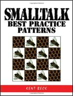

Welcome
My name is Mattias Högström, and I live and work in Malmö, Sweden. I work as a system architect at Visma, an important provider of ERP solutions in the nordic market. Although I devevelop mainly in C++ and C#.Net, I like to have an open mind to laguages as well as platforms. I have coded for most platforms during my career.
The most mind bending experience was to learn functional languages like F# and Haskel One has to forget everything one knows about programming, and start thinking backwards. One day it says click in your head, and you realize that backwards is actually forwards. I once wrote an article about analyzing profiling data, where I wrote the analyzer in F#. I would love to someday work writing functional code for real.
Another mind bending experience, was learning Smalltalk. Why would anyone today, learn a dead language? Smalltalk was lightyears before its time. Cool and hyped features that have been added to new languages in the recent years, have been available in smaltalk for 20 years. The most awesome developer podcast is called RubyRogues, it is a panel of skilled developers, that discusses everything from hiring developers to design patterns. For some episodes the panel and its listners reads a book.
| At one point it was the Smalltalk Best Practise Patterns by Kent Beck, written in 1996. |  |
Newer books about design and programming are just copies of that book. Kent Beck has written newer books for more modern languages, but it is more or less the the same stuff adapted and presented in a new language. It is absolutely amazing that that book was written in 1996. I started my university studies in 1995, and it wasn't until I learned Unit Testing, more than 10 years later that I found amazing design techniques for making the code testable. What feels sad is that the techniques have been around for a very long time, but the book was unknown to me. It was written for an abandoned language. If I had read that book in 1996, I could have been a coding legend myself today.
Learning Smalltalk was like being an archaeologist looking lost treasures in some lost temple. As the story goes, I actually found some treasues.
One of the biggest Smalltalk distributions is called Squeek. All classes of the Smalltalk distribution, and all methods, have unit tests. That is amazing!! These tests is a treasure. There are new state-of-the-art products today, that don't have full coverage.
The second treasure, was the double-dispatch pattern, which is a nice pattern, for among other things implementing overloading in a dynamic language. Overloading, i.e. having methods with the same name that only differ by parameter types, is not possible in a dynamic language, since it can't discriminate parameters on types.
My latest hobby project was finishing the article Log viewer concepts for ETW (Event Tracing for Windows). It is an attempt of creating structure to flat logs by introducing context and searchability.
My long going project at the moment, is taking a Windows 8 development certification. I write once in a while on a metro app, where I apply knowledge that I learn. I am writing a Wine game. I will soon add a small screenshot from it.
Contact
I am always interested in meeting new people for discussing technology, exchanging ideas, or just sharing tips and tricks.

Publications
Here you can find my debugging articles on CodeProject.com